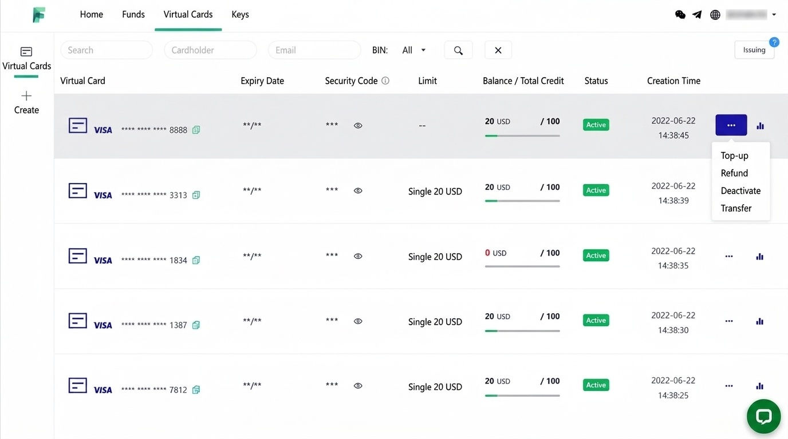
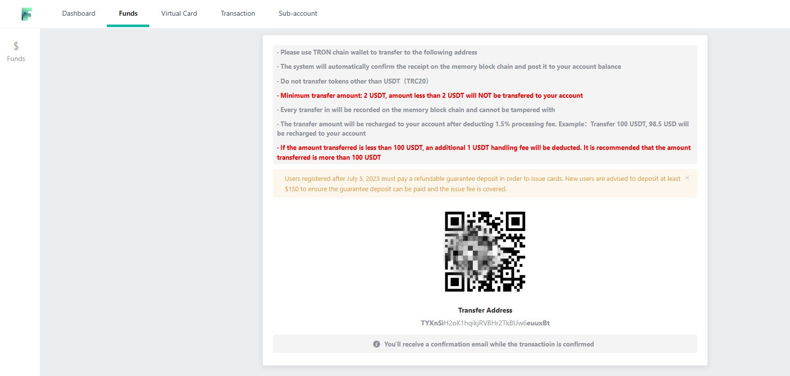
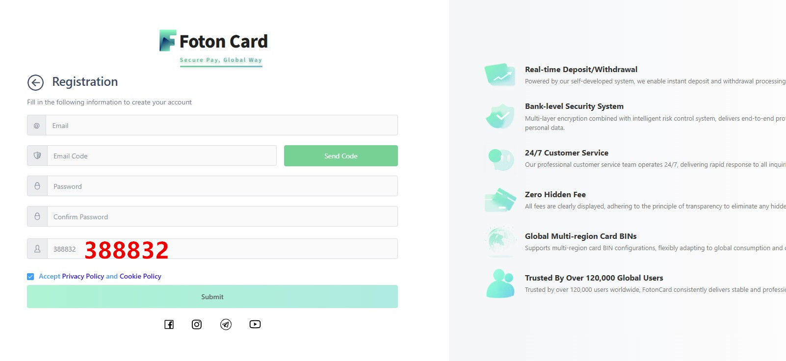
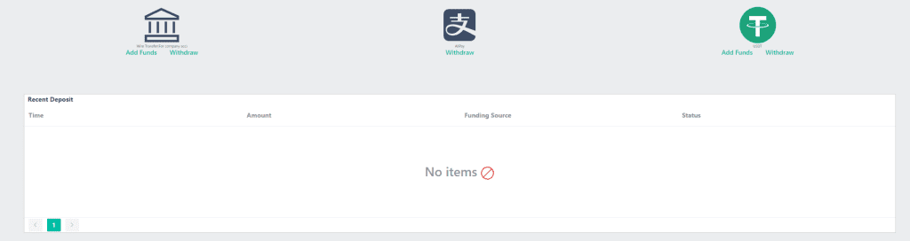
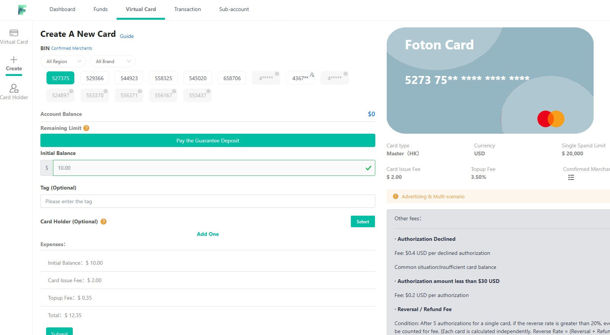
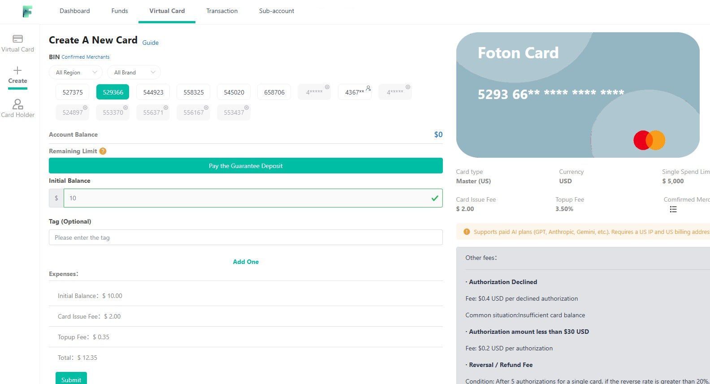

Global Payment & Collection
Secure payment solutions for ad spending and AI subscriptions. An enterprise-grade virtual credit card service from a professional card issuer, with real-time USDT top-ups — covering Facebook / TikTok / Google ad campaigns, ChatGPT Ads, ChatGPT / Claude and other AI tool subscriptions, cross-border e-commerce purchasing, and more. The FotonCard mobile app is live, so you can manage your virtual cards anytime, anywhere.
Get Started Now Learn MoreFotonCard is a veteran virtual credit card issuing platform that has been operating stably for six years. As a professional overseas card vendor and virtual card issuer, it offers a very rich selection of card types: multiple different BINs (card prefixes) to choose from, so you can match different cards to different purposes — and it is also well suited to issuing cards in large batches. In short, if you have been comparing options on Reddit and review forums for the best crypto virtual card with no KYC, this six-year track record is exactly the kind of longevity those discussions prize.
You can use it to pay for legitimate purposes such as ChatGPT Plus, ad fees, and overseas online shopping. It supports USDT top-ups with no monthly fee. Some BINs support 3DS verification, and the compatibility is worth praising.
The platform deliberately maintains a certain entry threshold and reasonable user-policy restrictions, which effectively prevents abuse and improves stability.
Simple design and dependable technology, safeguarding your cross-border business.

Clear and transparent pricing, so you can spend with confidence.
The table below lists the platform's base rates; enterprise users enjoy even better pricing.
| Item | Details |
|---|---|
| Top-up methods | USDT, USD bank transfer |
| Minimum top-up | 20 USDT |
| Top-up fee | 1–3% (depends on user tier) |
| Monthly fee | None. Card issuing fee is USD 2–3 per card; discounts negotiable for large volumes |
| KYC verification | No KYC required — USDT top-ups need no verification |
| Important notes | Note: to keep card BINs running stably long-term and filter out freebie-abuse users, the platform has a security deposit system: you must pay a USD 100 deposit before issuing your first card; the deposit is refundable once your chargeback and refund rates meet the required standard. |
As a professional VCC issuing platform, FotonCard covers mainstream international online payment needs — one card, many uses.
As a professional overseas card vendor, FotonCard is deeply optimized for Facebook / TikTok / Google ad scenarios and supports ChatGPT Ads placements.
Why do advertisers need virtual cards? Facebook ad spend is heavy and billing is frequent; physical bank cards easily trigger risk-control freezes. FotonCard virtual cards support running many cards in parallel — one account can issue multiple cards, each bound to a different ad account, effectively isolating risk.
TikTok ads are similar to Facebook; US/UK virtual cards are supported. It is advisable to issue a separate card for each ad account for easy reconciliation and risk isolation.
Google Ads has a fixed billing cycle, and virtual cards fit the monthly billing model perfectly. Google Cloud, Google Play developer accounts, and similar scenarios are also supported.
As a professional virtual card issuer, FotonCard solves the difficulty of paying for global AI tool subscriptions in one stop.
Mainstream AI tools can all be subscribed. Tested in practice, the following AI tools can be successfully subscribed with FotonCard virtual cards:
AI tools check not only the card's issuing country but also your IP address. Please make sure to:
FotonCard supports USDT top-ups with no KYC verification. Individual users can register and use the platform directly.
Register with an email address: fill in a username, password, and other details, then submit. After registering and logging in, you can top up and issue cards right away — no identity verification needed. No authentication; USDT top-ups are KYC-free, so you can use the platform's services directly.
Go to Account Overview > Top Up > USD Online Top-up > choose USDT top-up.
USDT top-up notes:
Click Card Overview > Quick Issue Card to enter the card issuing center, where multiple BINs are available. If you're unsure which to pick, ask customer service for a recommendation.
Funds topped up via USDT cannot be withdrawn — they can only be spent. Top up sensibly based on actual needs to avoid idle funds. FotonCard supports USDT top-ups with no KYC verification.
In terms of quantity, FotonCard currently operates 14 card BINs: 4367, 4866, 4***, 529366, 527375, 544923, 558325, 545020, 658706, 524897, 553370, 556371, 556167, and 553437. These are just the BINs currently listed — behind the scenes, FotonCard partners with numerous card-issuing banks in the US, Hong Kong, and the UK. Beyond the 14 live BINs, it also holds a rich reserve of BIN resources, updating its card lineup as needed: adding fresh BINs and retiring older ones.
In terms of issuing regions, FotonCard's BIN resources cover the United States, Hong Kong, Singapore, and the UK. US virtual cards are the most universally usable, covering online payments in most of the world. The Hong Kong, Singapore, and UK BINs complement the US cards. Together they fully handle your globally covered international online payment needs.
In terms of card networks, both Mastercard and Visa are available — plus a market-exclusive "Discover" virtual card!
| BIN | Issuing Region | Network | Best Use | Per-Transaction Cap |
|---|---|---|---|---|
| 4367 | Hong Kong | Visa | Facebook/Google Ads, OpenRouter | $100,000 |
| 4866 | United States | Visa | ChatGPT Ads, large US e-commerce payments | $100,000 |
| 529366 | United States | Mastercard | ChatGPT / Claude / Gemini subscriptions | $10,000 |
These three are FotonCard's star BINs; to keep each BIN stable, they are currently limited to the specific payment scenarios above. The other virtual cards are general-purpose BINs usable for all kinds of online subscriptions and payments, with no scenario restrictions.
FotonCard's BINs are all enterprise-grade cards with high per-transaction caps. For example, BINs 4367 and 4866 allow up to $100,000 per transaction, while other BINs cap at $10,000 per transaction. Limits this high are especially suitable for enterprises and studios making large online payments — an advantage personal credit cards simply can't match.
USDT needs no introduction — it's the US-dollar stablecoin issued by Tether. It isn't a real US dollar, but in worldwide usage today USDT is effectively equivalent to the dollar, and in some scenarios it even works better than real dollars!
Even though USDT is so convenient, only a minority of mainstream online services and e-commerce platforms accept it directly; most merchants still primarily accept traditional Mastercard, Visa, or American Express credit cards. So here's the problem: if you hold a lot of USDT but need to shop on Amazon or subscribe to ChatGPT, what do you do? The old way is to convert USDT into US dollars, transfer the dollars to your bank account, then spend with a Mastercard/Visa card. That works, but the conversion wastes fees, and the exchange loss is significant — hardly worthwhile. Worse, if the OTC dealer you use is problematic, you could receive "tainted" money and get your bank account frozen — a net loss.
That's why the "USDT virtual card" was born! It solves the scenario where you hold crypto but need a Mastercard/Visa card for international online payments. You can top up your USDT directly into a virtual card issuing platform, then open Mastercard/Visa virtual cards of different BINs or issuing regions there for international online payments — avoiding all the friction and loss of converting USDT to fiat.
Absolutely. For stability and reliability, FotonCard is the leading name in the USDT "U card" space! Say nothing else — it has run stably for a full six years. Ask yourself: what other U-card platform lasts that long? Most shut down or abscond with funds after a year or two. FotonCard supports both USDT crypto top-ups and corporate USD bank transfers. For individuals and businesses, USDT top-up is the recommended route: fast, convenient, and timely. If you're a cross-border e-commerce seller with dollar funds, corporate USD bank transfer works too.

Be sure to select the Tron chain (TRC20) — don't pick the wrong blockchain. For your first top-up, at least $150 is advised (including the $100 security deposit); the deposit is returned to your account later. It's a stability mechanism to filter out freebie-abuse users.
For cross-border enterprises and studio users with large international purchases and ad-fee payments, a Mastercard/Visa virtual card that supports very large single transactions becomes a necessity. Ordinary personal credit cards usually have online payment limits — perhaps a few thousand dollars per transaction, failing beyond that. Enterprise-grade Mastercard/Visa virtual credit cards carry extremely high per-transaction caps, ideal for the extra-large online payments of cross-border business.
Here is a summary of the per-transaction spending caps of the various BINs currently operating on FotonCard:
| Card BIN | Per-Transaction Cap | Issuing Region |
|---|---|---|
| 4367 | $100,000 | Hong Kong |
| 4866 | $100,000 | US |
| 527375 | $100,000 | US |
| 529366 | $5,000 | US |
| 544923 | $10,000 | US |
| 558325 | $10,000 | US |
| 545020 | $10,000 | US |
| 658706 (Discover) | $10,000 | US |
Two FotonCard BINs support single payments of up to $100,000 — more than enough for enterprise-level, extra-large international online payments. The other BINs cap at $10,000 per transaction, which is also plenty for small and mid-size studios.
Owning a high-limit virtual credit card lets your business pay confidently while going global, without worrying that payment hiccups will derail your procurement.
An "anonymous virtual credit card" is a Mastercard or Visa virtual card you can create online without KYC identity verification — issued without uploading any personal ID documents. All you need is an email address to register; the whole process requires no ID card, passport, or other sensitive personal information.
Telecom and online fraud is rampant these days. Registering for various online services inevitably means uploading your phone number, ID, passport, and bank card details to websites. But because some platforms have security holes, hackers breach them and harvest users' private data, or platform employees illegally sell it to black/grey-market teams — leading to constant harassment from fraud calls and spam, or even financial losses.
An anonymous virtual credit card that can pay freely across the internet without real-name authentication has therefore become a must-have for online subscription payments. Even if your card number leaks, fraudsters can't obtain your real identity. In practice, a no KYC crypto card like this works as a complete crypto virtual debit card — you top up USDT and then spend it anywhere Mastercard/Visa is accepted.
Beyond privacy, anonymous virtual cards protect your money. On less trustworthy overseas e-commerce sites you enter card number, expiry, and CVV; once hackers steal these details, funds on the card are easily siphoned. Take the well-known data leak at a large group-buying site: the author's Mastercard was linked there for routine food delivery, and after the breach the card statement mysteriously showed several failed 1–3 dollar micro-payments. Clearly, hackers had obtained the card number and were running "card-testing" probes — and had a small test payment succeeded, large-scale fraud would have followed.
Increasingly powerful AI models keep appearing, and jailbreak incidents involving models like Claude and ChatGPT happen frequently. These models have strong capabilities for network attacks and vulnerability discovery, and weakly protected sites easily get breached, leaking user data. Using a no-KYC anonymous virtual card effectively lowers that risk.
For the privacy and fund-safety problems above, an instant virtual credit card with no KYC and pay-as-you-go top-ups is a genuine necessity — and FotonCard is exactly such a platform.
Worst case, a stolen card only costs you the limited funds on it — far more reassuring than having a real physical bank card with large balances skimmed. FotonCard also supports USDT top-ups, which besides convenience are a strong privacy-protecting measure compared with traditional fiat funding.
The FotonCard platform is a closed, invite-only Mastercard/Visa virtual card platform. That means you can't simply visit the official site fotoncard.com and register directly — you need an exclusive registration invite code to sign up successfully.
FotonCard is invite-only; direct registration on the official site cannot open an account. You must enter an exclusive invite code to create an account — have a valid code ready in advance.
The latest, currently valid FotonCard registration invite code is 388832. You must enter this code when registering — without it, registration is impossible. It's a required field! See the screenshot below:

Registering with the FotonCard invite code 388832 grants the following perks:
To see which BINs are available, check the FotonCard BIN guide; for USDT top-ups and card issuing, see the USDT virtual card tutorial.
Sitting on a pile of USDT and wanting to subscribe to ChatGPT, shop overseas, or pay for international online services — but stuck without a convenient off-ramp? Virtual card platforms that accept USDT deposits directly now exist, and FotonCard is one of the most representative. Its biggest highlight is direct USDT top-ups: fast arrival and a low entry barrier. This article walks through the whole flow — registration, top-up, and available BINs — step by step.
FotonCard's registration is friendly and nearly barrier-free — just three steps:
One small pitfall: the platform appears to not support Microsoft email domains. Avoid Outlook, Hotmail, and the like, or the verification code may never arrive and your effort is wasted. Gmail and other mainstream international mailboxes are recommended — reliable delivery, less junk-folder risk.
Also note that FotonCard uses closed, invite-only registration: you must enter the exclusive invite code 388832 when signing up (see the Invite Code section above for details).
There are two main ways to fund FotonCard. One is bank wire transfer — not recommended, as it's slow and funds usually take two to three days to arrive. The other, strongly recommended, is a USDT deposit, whose biggest advantage is instant arrival.

Overall, TRC20 transfers usually confirm within minutes and are the most cost-effective funding method. For operational details, the homepage's USDT top-up tutorial follows the same approach.
FotonCard offers an unusually rich card selection. The platform launched with 7 solid BINs:
Better still, the lineup keeps growing. On March 20, 2023, the platform added 4 brand-new BINs in one go:
That makes 11 different card prefixes in total — very rich resources for a virtual card platform, greatly improving payment success rates across scenarios. Note: the BIN list adjusts as partner issuing banks change; the live list in the card-issuing center is authoritative. More BIN knowledge is in the BIN guide, and for the linked-ban risks of cheap secondary BINs see the low-price card risk guide.

If your main goal in getting this card is to activate a Wise account, read this carefully. Per the platform's notice, the following 3 BINs have been blacklisted by Wise and can no longer be used for activation:
Frankly, this isn't unique to FotonCard. The broader environment has shifted: activating Wise with a virtual card is now essentially a dead end and getting harder all the time. If that's your goal, temper your expectations and look for another route.
All in all, FotonCard is a distinctive USDT-deposit virtual card platform: simple registration, anonymity-friendly, instant top-ups — a great fit for users who hold crypto and also need international online payments. If you're looking for a channel to open and spend cards directly with USDT, it deserves a place on your platform-comparison list; weigh the pros and cons above and decide for yourself.
Many people have hit this headache: you want ChatGPT Plus to unlock GPT-4o, web browsing, advanced image generation, and long-context conversations — but you're blocked everywhere. Either domestic bank cards simply don't support cross-border subscriptions, or the payment page errors out and declines on submit — and some people, through careless operations or a "dirty" environment, trigger OpenAI's risk controls, get throttled, lose payment privileges, or get banned outright.
By 2026, OpenAI's risk controls have leveled up again. Relying on Stripe's multi-layer payment verification, they examine card BIN jurisdiction, IP environment, account behavior, and billing details comprehensively. For users in restricted regions, doing it alone is harder than ever. This guide strictly follows FotonCard's latest operating rules, combined with real-world success cases and pitfalls from hundreds of paying customers — a complete, zero-pitfall tutorial.
Compared with ordinary overseas credit cards and niche payment tools, FotonCard's advantages in fitting ChatGPT's official subscription channel are clear:
The shortcomings of common alternatives are obvious: domestic bank cards are almost all intercepted by OpenAI's risk controls; private foreign cards fail on mismatched billing addresses and messy IPs; third-party resellers overcharge and carry risks of account theft, mass bans, and vanished after-sales support. FotonCard's official channel sidesteps all of these traps.
Many subscription failures aren't operational errors — they trace back to sloppy preparation and an impure environment that triggers risk control prematurely. The steps below are tuned to OpenAI's 2026 rules; each is the field-tested optimal flow.
Log in to the FotonCard official site, register per the platform's guidance, and apply for US-region virtual credit cards suited to ChatGPT subscriptions — the 529366 and 486699 BINs are recommended. After issuing, verify the card status: make sure it's properly activated, not frozen, and has a sufficient balance topped up in advance — at least $25 is advised.

OpenAI's new risk controls scrutinize the network environment strictly. Free shared nodes and multi-user shared IPs are absolutely off-limits. Throughout the subscription, use a clean, fixed, dedicated US static IP node: no switching regions, no changing nodes, no mixing devices across registration, login, and payment.
You must use a clean US static IP — no shared nodes. Never switch regions, change nodes, or mix devices during the process; frequent IP-location changes trigger risk controls.
Old accounts, accounts with free-trial history, and accounts with messy login environments all carry high risk weight and are unlikely to subscribe successfully. The safest approach: register a brand-new dedicated ChatGPT account, preferably with a Gmail address to avoid high-risk email penalties. Keep the whole process matched to the US network environment.
Enter ChatGPT's dedicated upgrade-to-Plus page, pick a monthly, quarterly, or annual plan as needed, and enter your FotonCard's card number, expiry, and security code accurately — ensuring the card details and billing jurisdiction match, eliminating address-mismatch errors. After double-checking, submit the payment. On success, GPT-4o, AI image generation, web search, and unlimited conversations unlock in real time.
We've distilled the paying experience of hundreds of FotonCard users into the high-frequency failure problems covering over 90% of 2026 subscription failures, each with a directly actionable fix. If you hit a payment error, block, or risk-control event, troubleshoot against this list.
Many users face repeated declines on the web, failed payment redirects, or outright card rejection — likely because web-side risk verification is stricter. In that case, switch to the in-app purchase channel on mobile: on iOS or Android, sign in with a dedicated US-region Apple ID or Google account, ensure there's sufficient balance or a valid international payment method on file, uninstall unofficial plugins and clear the app cache, then subscribe through the official ChatGPT app's in-app payment. In testing, this succeeds far more often than the desktop web flow.
Mismatched node jurisdiction is a core trigger of payment failure. High-traffic nodes like Japan and Singapore have elevated risk thresholds and are especially prone to silent channel blocks. Multiple users reported that switching the VPN node from Japan/Singapore to a quality UK static node improved network stability and slashed risk-control probability, resolving most silent blocks. Also keep the node fixed throughout — don't hop jurisdictions.
Never start the free trial on a new ChatGPT account! The free-trial channel is under extremely strict scrutiny; once triggered, the account is flagged as a high-risk trial account and will most likely have payment privileges locked, making subscription impossible.
The optimal standard flow: use a clean US IP throughout; register the account, sign in to devices, and download the app with a dedicated US account only; skip all free-trial entrances entirely; subscribe immediately after registration using your FotonCard — zero risk control, maximum stability.
Combining OpenAI's 2026 rules with extensive field cases, the core of a stable ChatGPT Plus subscription boils down to three things: a properly compatible payment channel, a pristine fixed US network environment, and account practices that avoid trial risk control. Follow FotonCard's official standard flow plus these field-tested tips, and most people succeed on the first try — done with repeated payment failures, account risk control, and restricted privileges for good.
Once Plus is active, you can confidently enjoy GPT-4o's powerful reasoning, long-document analysis, AI image generation, and real-time web search — boosting efficiency across study, work, and content creation. Happy subscribing!
A collection of the most common virtual credit card questions and answers from the original site.
Yes. US AI services restrict both your access IP route and the card's issuing region. US and UK virtual cards both work for subscribing; Hong Kong virtual credit cards do not.
For rates, contact us directly for details. We can't claim the absolute lowest, but it's quite cost-effective. If you're paying Facebook ad fees with heavy spend, the price is negotiable.
No. Only regular international online payment scenarios — cross-border e-commerce, ad marketing, paid subscriptions, and other compliant uses. Financial-type merchants are not supported.
Absolutely — those are basic scenarios.
Payment works, but honestly: if you plan to run a cross-border store seriously for the long term, pay Amazon's rent with your physical bank card. A virtual credit card is better suited to registering Amazon buyer accounts or bulk-registering stores.
That's fundamental. If you stop using the platform, contact customer service to request a withdrawal — the platform won't keep your hard-earned money.
Yes — every virtual card platform has a minimum initial top-up, usually around $20. It filters out freebie-abusers and helps keep the platform stable long-term.
Customer service contact details are at the top-right of the page, staffed 24/7 to handle card issues at any time; you can also email support@fotoncard.com.
Yes — many cross-border e-commerce sellers buy on AliExpress, and the platform's cards support AliExpress purchases.
As mentioned, these US AI services check not only the card's issuing region but also your IP address. If the IP isn't in a supported country or doesn't match the card's issuing country, risk control may kick in and the payment fails. Use a clean, native US IP line together with a US virtual credit card to lower the rejection odds.
No. This is a virtual card issuing platform — you register your own account, top up, and issue your own Mastercard/Visa virtual cards.
We know those are for freebie account abuse — not our business here. All cards require a proper top-up for normal spending; no scatter cards at one-dollar amounts.
Yes — commonly international flights, hotels, concert tickets, and so on. We even have international travel-agency clients cooperating with us.
No! Only compliant payment scenarios are supported — mass refunds are not.
Telecom fraud is rampant these days, so to protect user privacy: USDT top-ups can be done without KYC.
Absolutely not! Virtual credit cards issued on this platform are valid for 2–3 years, can be recharged and reused repeatedly — not one-time throwaway cards.
After registering, you can log into the dashboard yourself to top up, issue cards, delete cards, and view card transaction details.
Some card BINs support 3DS verification, and the verification code can be viewed in the dashboard — e.g., for Facebook ad account card linking.
Yes. FotonCard supports USDT top-ups with no KYC verification; individual users can register and use it directly.
USDT top-ups support the TRC20 network only, and the minimum is 20 USDT. Funds topped up via USDT can only be spent and cannot be withdrawn, so avoid topping up too much at once.
Field-tested: the 456599 BIN successfully pays OpenAI/ChatGPT (IP requirements apply at payment — use a clean IP matching the region). That BIN can also be linked to Alipay for spending. Tested May 2026.
Some BINs (e.g., 456599) have been tested and can link to Alipay. But note: official platform policy does not support mainland platforms (WeChat, Alipay, etc.) — actual linking varies by BIN and policy changes.
Yes — refunded funds return to your virtual credit card account.
Generally yes, and safer: they don't expose your real card information. They can also be used for one-off transactions, effectively reducing the risk of credit card info theft. Funds are custodied by a licensed third-party institution — safe and reliable.
Ad platforms: Facebook, Google, TikTok, Amazon, Twitter, etc. Subscriptions: ChatGPT, OpenAI, Claude, Cursor, Apple, Google, Gemini, Midjourney, Grok, Telegram, and more. 30+ global regions supported for diverse cross-border spending.
The best no KYC crypto debit card combines platform longevity, instant USDT top-ups and multiple card BINs. FotonCard checks all three: six years of stable operation, TRC20 USDT funding that arrives in minutes, and 14+ card BINs for different payment scenarios — all with no identity verification.
Community threads on Reddit typically judge no-KYC crypto cards by whether the platform keeps running after a year, whether deposits are retrievable, and whether card BINs stay alive. FotonCard matches those expectations: six years of continuous service, refundable deposits after chargeback standards are met, and regularly refreshed BINs.
Yes. After topping up USDT, the issued Mastercard/Visa virtual debit card works for everyday international online payments — shopping, subscriptions, cloud services and more — behaving like a normal debit card in all mainstream checkout flows.
A credit card with no physical form — all transactions happen online. A virtual card typically has just a card number, expiry date, and CVV.
Many virtual card platforms on the market collapse or run off after a while — in the end because the entry barrier is too low and abuse is rampant. FotonCard keeps a certain threshold and sensible user policies, preventing abuse and improving stability. If you need bulk issuing and multiple BINs, FotonCard is a great fit.
No. Register, top up, and issue cards directly — cards are issued wholesale online, with no credit-history review.
Currently listed: 4367, 4866, 4***, 529366, 527375, 544923, 558325, 545020, 658706, 524897, 553370, 556371, 556167, 553437 — with fresh BINs added continuously.
The FotonCard card-issuing center — making global payments simpler, safer, and more efficient.
Whether it's Facebook/TikTok ad spending, ChatGPT/Claude AI tool subscriptions, or cross-border e-commerce purchasing, FotonCard delivers stable, reliable virtual credit cards. Enterprise rates as low as 1%, bulk card issuing supported.
Register NowNo business certification required · KYC-free USDT top-ups · Multiple BINs available